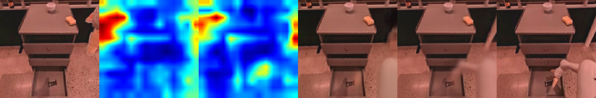
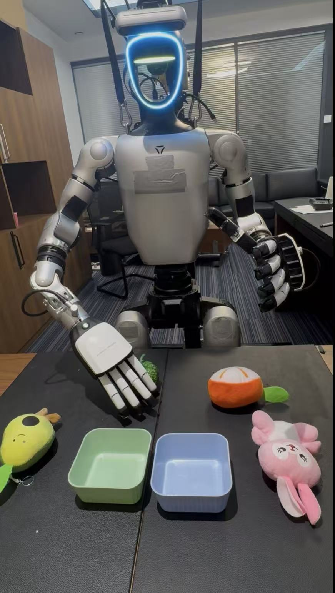
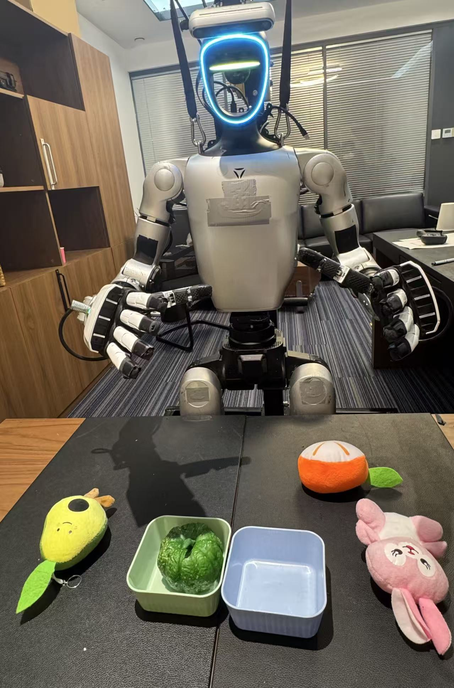

LAM Pre-Training
An inverse dynamics model encodes visual transitions into latent actions, while a forward dynamics model reconstructs future observations from the current frame and quantized latent action.
ICML 2026
Jointly optimizing latent action models and diffusion-based VLA policies to bridge unlabeled videos with action-labeled robot demonstrations.
State Key Laboratory of General Artificial Intelligence, BIGAI · Peking University
Vision-Language-Action models enable robots to predict actions directly from observations and language instructions, yet their performance is constrained by the scarcity of high-quality real-world robot action datasets. Latent Action Models learn action representations from visual dynamics in unlabeled videos, but they are commonly trained separately from VLA policies.
LARA introduces a plug-and-play representation alignment framework that jointly optimizes the Latent Action Model and a diffusion-based VLA policy. The alignment lets LAMs learn from action trajectories and helps VLA policies use forward dynamics to avoid functionally ineffective action hallucinations.
Method
An inverse dynamics model encodes visual transitions into latent actions, while a forward dynamics model reconstructs future observations from the current frame and quantized latent action.
Intermediate DiT features in the VLA policy are aligned with latent action representations, allowing the policy and latent action space to co-evolve.
The same alignment works as a post-training module for pretrained VLAs and as a latent action refiner for LAM-based pseudo-labeling pipelines.
Results
LARA full improves over the strongest OXE-constrained baseline.
Large gains on pick, move, and drawer tasks under constrained pre-training.
Real-world humanoid manipulation improves from 56.0 to 74.0.
Better latent action pseudo-labels transfer to SIMPLER evaluation.



Applications
Video
@inproceedings{liu2026lara,
title={LARA: Latent Action Representation Alignment for Vision-Language-Action Models},
author={Liu, Mengya and Jia, Baoxiong and Huang, Jiangyong and Zhang, Jingze and Huang, Siyuan},
booktitle={Proceedings of the 43rd International Conference on Machine Learning},
year={2026}
}